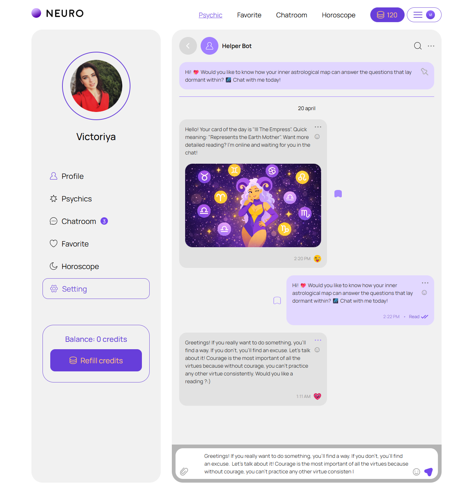
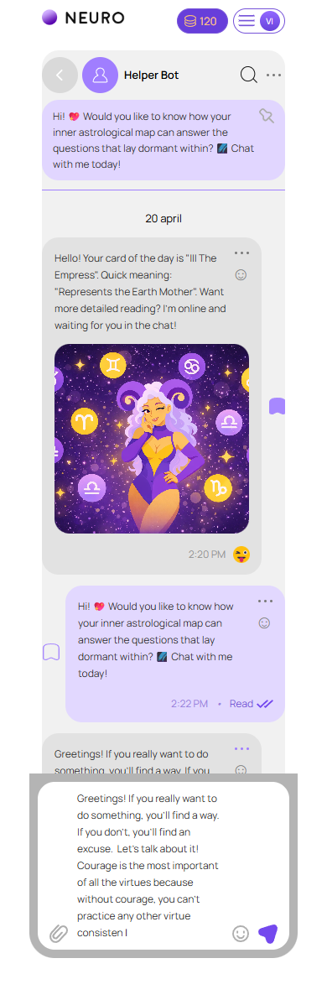

Помощник
account/helper-bot.html
Отдельный автоматический помощник, не консультация человека.
| Когда открывается | Меню / самостоятельный раздел |
|---|---|
| Данные | Своя helper history; черновик; карта дня; ответ/ошибка. |
| Сценарий | Send сохраняет вопрос → ожидание → ответ либо ошибка без ложной доставки. |
| Переходы | Постоянный диалог |
П05: назначение и бесплатность помощника требуют утверждения; не маркировать AI-ответ именем эксперта.
Общая и предметная логика. Снимки и подписи элементов — исходная редакция макета; поздние уточнения ТЗ имеют приоритет в своей области. Это не проверка текущего сайта.
Сопоставление с AskNebula
Существующие наблюдения 07–09.10.2026, без повторной проверки в этой передаче.
Нужна отдельная сверка соответствующего экрана/состояния референса. Отсутствие аналога не установлено.
Состояние 1280 · 1280 × 1326


Элементы и ожидаемые действия
| Элемент | Название в макете | Действие | Ожидаемый результат |
|---|---|---|---|
| E001 Виден | Neuro profile | Открыть адрес из исходника: profile.html. | Сохранить авторизацию и переданный контекст. Backend-only маршрут связывает Игорь; открытие не выполняет денежное действие. |
| E002 Виден | Psychic | Открыть адрес из исходника: psychics.html. | Сохранить авторизацию и переданный контекст. Backend-only маршрут связывает Игорь; открытие не выполняет денежное действие. |
| E003 Виден | Favorite | Открыть адрес из исходника: favorites.html. | Сохранить авторизацию и переданный контекст. Backend-only маршрут связывает Игорь; открытие не выполняет денежное действие. |
| E004 Виден | Chatroom | Открыть адрес из исходника: chatroom.html. | Сохранить авторизацию и переданный контекст. Backend-only маршрут связывает Игорь; открытие не выполняет денежное действие. |
| E005 Виден | Horoscope | Открыть адрес из исходника: horoscope.html. | Сохранить авторизацию и переданный контекст. Backend-only маршрут связывает Игорь; открытие не выполняет денежное действие. |
| E006 Виден | Profile | Открыть адрес из исходника: profile.html. | Сохранить авторизацию и переданный контекст. Backend-only маршрут связывает Игорь; открытие не выполняет денежное действие. |
| E007 Виден | Psychics | Открыть адрес из исходника: psychics.html. | Сохранить авторизацию и переданный контекст. Backend-only маршрут связывает Игорь; открытие не выполняет денежное действие. |
| E008 Виден | Chatroom 3 | Открыть адрес из исходника: chatroom.html. | Сохранить авторизацию и переданный контекст. Backend-only маршрут связывает Игорь; открытие не выполняет денежное действие. |
| E009 Виден | Favorite | Открыть адрес из исходника: favorites.html. | Сохранить авторизацию и переданный контекст. Backend-only маршрут связывает Игорь; открытие не выполняет денежное действие. |
| E010 Виден | Horoscope | Открыть адрес из исходника: horoscope.html. | Сохранить авторизацию и переданный контекст. Backend-only маршрут связывает Игорь; открытие не выполняет денежное действие. |
| E011 Виден | Setting | Открыть адрес из исходника: settings.html. | Сохранить авторизацию и переданный контекст. Backend-only маршрут связывает Игорь; открытие не выполняет денежное действие. |
| E012 Виден | Back to Help | Закрыть локальное окно или вернуться к инициатору; Stay отменяет намерение завершить. | Вернуть фокус и исходный контекст. Не выполнять оплату, удаление или Complete. При неизвестном результате платежа сначала сверить заказ. |
| E013 Виден | Helper Bot message history | Информационный блок/область фокуса, не самостоятельная команда. | Показывать актуальные данные соответствующего сценария; фокус или чтение не выполняют мутацию. |
| E014 Виден | Attach file | Выбрать разрешенное вложение; показать preview и возможность убрать до отправки. | Проверить MIME/размер/права, загрузку и ошибку; выбор локального файла не означает отправку сообщения. |
| E015 Виден | TEXTAREA | Заполнить поле текущей формы: TEXTAREA. | Черновик сохраняется при ошибке; допустимая длина/обязательность валидируются сервером. Отправка относится к сценарию «Помощник». |
| E016 Виден | Choose emoji | Открыть категорию или вставить выбранный emoji в черновик. | Не отправлять автоматически; вернуть фокус в composer. |
| E017 Виден | Send message intent | Отправить вопрос отдельному автоматическому помощнику. | Ожидание → ответ/ошибка; не выдавать ответ за человека и не списывать как экспертную консультацию. |
Состояние 390 · 390 × 1192


Элементы и ожидаемые действия
| Элемент | Название в макете | Действие | Ожидаемый результат |
|---|---|---|---|
| E001 Виден | Neuro profile | Открыть адрес из исходника: profile.html. | Сохранить авторизацию и переданный контекст. Backend-only маршрут связывает Игорь; открытие не выполняет денежное действие. |
| E002 Скрыт в этом состоянии | Psychic | Открыть адрес из исходника: psychics.html. | Сохранить авторизацию и переданный контекст. Backend-only маршрут связывает Игорь; открытие не выполняет денежное действие. |
| E003 Скрыт в этом состоянии | Favorite | Открыть адрес из исходника: favorites.html. | Сохранить авторизацию и переданный контекст. Backend-only маршрут связывает Игорь; открытие не выполняет денежное действие. |
| E004 Скрыт в этом состоянии | Chatroom | Открыть адрес из исходника: chatroom.html. | Сохранить авторизацию и переданный контекст. Backend-only маршрут связывает Игорь; открытие не выполняет денежное действие. |
| E005 Скрыт в этом состоянии | Horoscope | Открыть адрес из исходника: horoscope.html. | Сохранить авторизацию и переданный контекст. Backend-only маршрут связывает Игорь; открытие не выполняет денежное действие. |
| E006 Скрыт в этом состоянии | Profile | Открыть адрес из исходника: profile.html. | Сохранить авторизацию и переданный контекст. Backend-only маршрут связывает Игорь; открытие не выполняет денежное действие. |
| E007 Скрыт в этом состоянии | Psychics | Открыть адрес из исходника: psychics.html. | Сохранить авторизацию и переданный контекст. Backend-only маршрут связывает Игорь; открытие не выполняет денежное действие. |
| E008 Скрыт в этом состоянии | Chatroom 3 | Открыть адрес из исходника: chatroom.html. | Сохранить авторизацию и переданный контекст. Backend-only маршрут связывает Игорь; открытие не выполняет денежное действие. |
| E009 Скрыт в этом состоянии | Favorite | Открыть адрес из исходника: favorites.html. | Сохранить авторизацию и переданный контекст. Backend-only маршрут связывает Игорь; открытие не выполняет денежное действие. |
| E010 Скрыт в этом состоянии | Horoscope | Открыть адрес из исходника: horoscope.html. | Сохранить авторизацию и переданный контекст. Backend-only маршрут связывает Игорь; открытие не выполняет денежное действие. |
| E011 Скрыт в этом состоянии | Setting | Открыть адрес из исходника: settings.html. | Сохранить авторизацию и переданный контекст. Backend-only маршрут связывает Игорь; открытие не выполняет денежное действие. |
| E012 Виден | Back to Help | Закрыть локальное окно или вернуться к инициатору; Stay отменяет намерение завершить. | Вернуть фокус и исходный контекст. Не выполнять оплату, удаление или Complete. При неизвестном результате платежа сначала сверить заказ. |
| E013 Виден | Helper Bot message history | Информационный блок/область фокуса, не самостоятельная команда. | Показывать актуальные данные соответствующего сценария; фокус или чтение не выполняют мутацию. |
| E014 Виден | Attach file | Выбрать разрешенное вложение; показать preview и возможность убрать до отправки. | Проверить MIME/размер/права, загрузку и ошибку; выбор локального файла не означает отправку сообщения. |
| E015 Виден | TEXTAREA | Заполнить поле текущей формы: TEXTAREA. | Черновик сохраняется при ошибке; допустимая длина/обязательность валидируются сервером. Отправка относится к сценарию «Помощник». |
| E016 Виден | Choose emoji | Открыть категорию или вставить выбранный emoji в черновик. | Не отправлять автоматически; вернуть фокус в composer. |
| E017 Виден | Send message intent | Отправить вопрос отдельному автоматическому помощнику. | Ожидание → ответ/ошибка; не выдавать ответ за человека и не списывать как экспертную консультацию. |